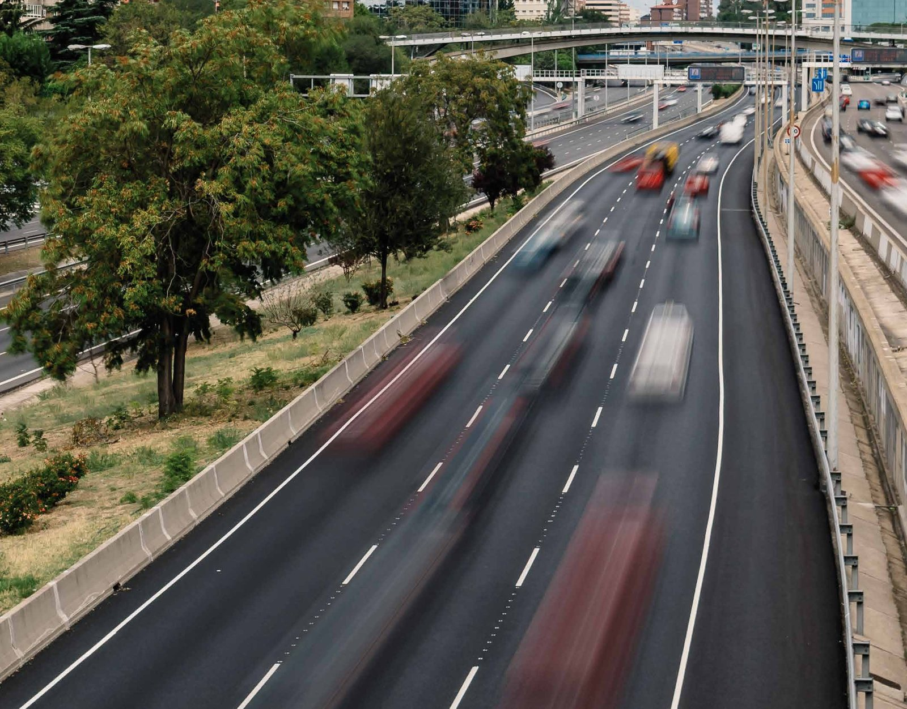
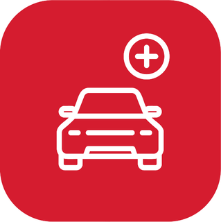

<!-- ════════════════════════════════════════════════════════════════════════
     SECCIÓN 06 — CONECTIVIDAD Y FLUJO DE TRÁNSITO
     ────────────────────────────────────────────────────────────────────
     Vista previa:  vista-previa/06-*.jpg
     Archivos que usa:
       · recursos/iconos/ventaja-1.png
       · recursos/iconos/ventaja-2.png
       · recursos/iconos/ventaja-3.png
       · recursos/imagenes/autopista.jpg
     ════════════════════════════════════════════════════════════════════
     Pega TODO este archivo dentro de un bloque «HTML personalizado».
     Antes tiene que estar pegado UNA sola vez 00-estilos-base.html.
     ════════════════════════════════════════════════════════════════════════ -->
<style>
/* ── CONECTIVIDAD ─────────────────────────────────────────────── */
.conectividad{display:grid;grid-template-columns:1fr 1fr;background:var(--claro)}
.conectividad .foto{position:relative;min-height:clamp(480px,54vw,700px);display:flex;
  align-items:flex-end;overflow:hidden;border-radius:0 0 var(--radio) 0}
.conectividad .foto>img{position:absolute;inset:0;width:100%;height:100%;object-fit:cover;object-position:center 72%;z-index:0}
.conectividad .foto::after{content:'';position:absolute;inset:0;z-index:1;
  background:linear-gradient(180deg,rgba(15,20,26,.34) 0%,rgba(15,20,26,.20) 40%,rgba(15,20,26,.62) 100%)}
.conectividad .foto .texto{position:relative;z-index:2;color:#fff;
  padding:clamp(34px,4vw,64px);width:100%}
.conectividad .foto h2{font-size:clamp(1.8rem,3.4vw,2.85rem);font-weight:700;line-height:1.1}
.conectividad .foto .sub{font-size:clamp(1rem,1.7vw,1.35rem);font-weight:300;
  color:rgba(255,255,255,.9);margin-top:6px;max-width:22ch}
.cifra-flujo{display:flex;align-items:baseline;gap:16px;flex-wrap:wrap;margin-top:clamp(30px,4vw,58px)}
.cifra-flujo .num{font-size:clamp(2.2rem,4.6vw,3.6rem);font-weight:700;letter-spacing:-.02em;line-height:1}
.cifra-flujo .lab{font-size:.85rem;font-weight:500;letter-spacing:.09em;text-transform:uppercase;line-height:1.4}
.caja-roja{background:var(--rojo);color:#fff;padding:18px 24px;font-size:.88rem;line-height:1.55;
  margin-top:22px;max-width:56ch}
.fuente{font-size:.72rem;letter-spacing:.06em;color:rgba(255,255,255,.75);margin-top:16px;text-transform:uppercase}
.conectividad .tarjetas{padding:clamp(46px,5.5vw,90px) clamp(28px,4vw,64px);
  display:flex;flex-direction:column;gap:clamp(20px,2.6vw,34px);justify-content:center}
.tarjeta-ventaja{display:flex;gap:22px;align-items:flex-start;background:#fff;border-radius:18px;
  padding:22px 26px;box-shadow:0 14px 34px rgba(0,0,0,.09);
  transition:transform .45s var(--exp),box-shadow .45s var(--exp)}
.tarjeta-ventaja:hover{transform:translateY(-4px);box-shadow:0 20px 44px rgba(0,0,0,.14)}
.tarjeta-ventaja img{width:66px;height:66px;flex-shrink:0}
.tarjeta-ventaja h3{font-size:.92rem;font-weight:600;text-transform:uppercase;letter-spacing:.02em;
  margin-bottom:8px;line-height:1.3}
.tarjeta-ventaja p{font-size:.85rem;line-height:1.55;color:var(--texto-med)}
.tarjeta-ventaja p strong{color:var(--texto);font-weight:600}

</style>

<!-- ════════════ CONECTIVIDAD ════════════ -->
<section class="conectividad">
  <div class="foto">
    
    <div class="texto">
      <h2 class="fade-up">Conectividad y alto<br>flujo de tránsito</h2>
      <p class="sub fade-up d1">Exposición estratégica de uno de los principales ejes de acceso a Colina</p>
      <div class="cifra-flujo fade-up d2">
        <span class="num">+1.096.000</span>
        <span class="lab">Viajes mensuales<br>por Autopista Los Libertadores</span>
      </div>
      <p class="caja-roja fade-up d3">El sostenido aumento del flujo vehicular posiciona al proyecto
        en un punto de alta visibilidad, con una exposición permanente frente a miles de potenciales
        clientes cada día.</p>
      <p class="fuente fade-up d4">*Fuente: Estudio Xbrein (año 2022)</p>
    </div>
  </div>
  <div class="tarjetas">
    <div class="tarjeta-ventaja fade-up d1">
      
      <div>
        <h3>Visibilidad sobre Autopista Los Libertadores</h3>
        <p>Una ubicación privilegiada sobre uno de los <strong>principales corredores viales</strong>
          del sector, que asegura <strong>alta exposición y excelente conectividad.</strong></p>
      </div>
    </div>
    <div class="tarjeta-ventaja fade-up d2">
      
      <div>
        <h3>Entorno de alto potencial comercial</h3>
        <p>El crecimiento residencial y la incorporación de nuevas familias han impulsado una
          <strong>mayor demanda por comercio y servicios,</strong> consolidando al sector como un
          polo de desarrollo.</p>
      </div>
    </div>
    <div class="tarjeta-ventaja fade-up d3">
      
      <div>
        <h3>Mercado con alto poder adquisitivo</h3>
        <p><strong>Más del 63%</strong> de los hogares de la comuna pertenece a los
          <strong>segmentos ABC1, C2 y C3,</strong> conformando una sólida base de consumidores
          para el comercio.</p>
      </div>
    </div>
  </div>
</section>
